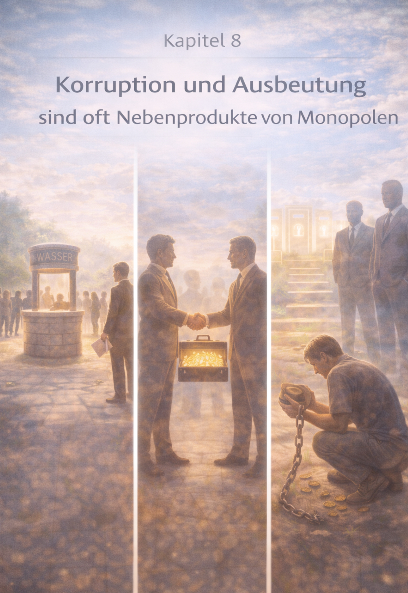

Kapitel 8: Korruption und Ausbeutung sind oft Nebenprodukte von Monopolen
Die Rückeroberung der eigenen Souveränität – Kapitelansicht.
DE
EN
Kapitel 8 – Korruption und Ausbeutung

Kapitelbild – Korruption und Ausbeutung (Monopol-Logik)